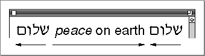

Legacy Document
Important: The information in this document is obsolete and should not be used for new development.
Important: The information in this document is obsolete and should not be used for new development.


Multistyled and Monostyled Text
Text is rendered in a certain font, style, size, and color. These aspects of text are collectively referred to as character attributes. TextEdit supports the display of text in various character attributes (different fonts, styles, sizes, and colors) within the context of a single edit record.Text that uses a variety of fonts, styles, sizes, or colors is referred to in this chapter as multistyled text to distinguish it from text that uses a single font, style, size, and color, which is referred to as monostyled text.
TextEdit lets you boldface, italicize, underline, outline, condense, extend, and shadow text. Using TextEdit routines, you can change the font family and type size of the entire text of an edit record (or a selected range of text that the user has chosen or the application has set). You can even increase the type size incrementally across a range of text containing various sizes, for example, so that all 10 point text is changed to 12 point and all 12 point text is changed to 14 point. If your application uses multistyled TextEdit and allows users to select fonts, TextEdit displays text correctly in all scripts. Apart from the TextEdit routines that deal with multistyled text exclusively, you can use all of the TextEdit routines to simplify and manage your application's text editing tasks for both multistyled and monostyled text.
TextEdit organizes multistyled text into style runs. The characters comprising a style run are contiguous in memory and are all displayed in the same font, size, color, and script as well as style. TextEdit tracks style runs in the data structures that are allocated for a multistyled edit record and uses this information to correctly display multistyled text. Figure 2-1 shows four style runs in a line of text.
- Note
- In the original Inside Macintosh documentation that describes TextEdit, the term face is used to refer to the following text style attributes: bold, italic, underline, outline, condense, extend, and shadow. The term style is now used instead of face to refer to these attributes.

Figure 2-1 Style runs in a line of text
TextEdit supports mixed-directional text: the combination of scripts with left-to-right and right-to-left directional text within a single line. Figure 2-2 shows an example of Hebrew and Roman text on the same line. The two runs of Hebrew text have a right-to-left direction, and the Roman text direction is left to right.
Figure 2-2 Mixed-directional text display
